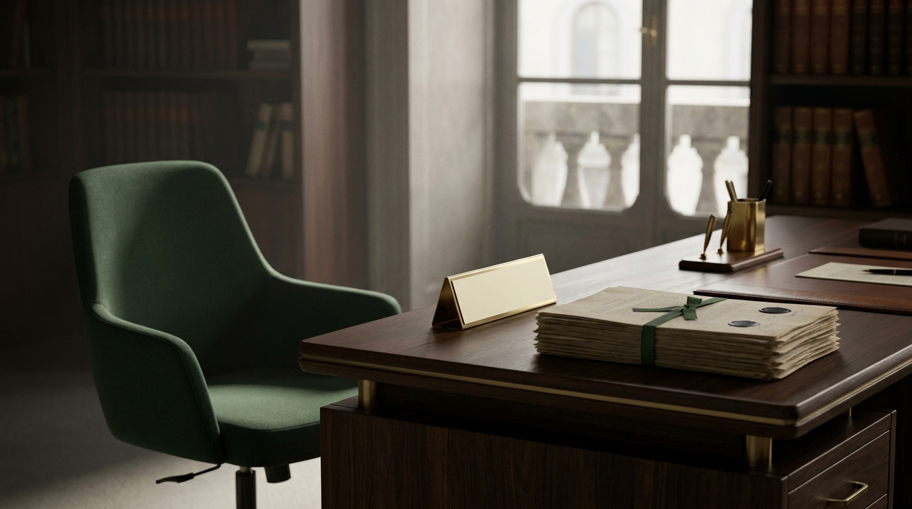

Mobbing: quando l'isolamento e la privazione di incarichi obbligano al risarcimento
La Corte di Cassazione ha ribadito un principio rilevante per chi lavora: lasciare un dipendente senza incarichi e isolarlo in modo sistematico può integrare mobbing, con obbligo di risarcire il danno biologico, ad esempio una depressione. Conta anche la qualità materiale dell'ambiente di lavoro. Vediamo quando scatta la responsabilità del datore e come tutelarsi.

Il caso e la decisione
La vicenda riguarda un lavoratore progressivamente svuotato delle proprie mansioni, isolato dai colleghi e collocato in condizioni materiali degradanti. La conseguenza è stata una patologia depressiva, riconosciuta come conseguenza diretta del comportamento aziendale.
La Cassazione ha confermato la responsabilità del datore di lavoro, qualificando la condotta come mobbing e disponendo il risarcimento del danno biologico, cioè la lesione dell'integrità psicofisica accertabile sul piano medico-legale.
Inquadramento normativo
Il perno della decisione è l'art. 2087 del codice civile, che impone al datore di lavoro di adottare tutte le misure necessarie a tutelare l'integrità fisica e la personalità morale del dipendente. È una norma a contenuto aperto: non elenca solo obblighi specifici, ma obbliga a proteggere il lavoratore da ogni condizione lesiva, comprese quelle organizzative e relazionali.
Il mobbing, va precisato, non è disciplinato da una singola legge che lo definisca. È una figura elaborata dalla giurisprudenza: si configura quando una pluralità di condotte ostili, ripetute nel tempo e con intento persecutorio, sono dirette a emarginare il lavoratore. Per riconoscerlo, i giudici richiedono di norma:
- una serie di comportamenti reiterati, non episodi isolati;
- un disegno persecutorio unitario;
- un danno alla salute o alla dignità del lavoratore;
- un nesso causale tra le condotte e il danno subito.
La privazione di incarichi rileva anche sotto il profilo del demansionamento (art. 2103 c.c.): lasciare il dipendente senza compiti, o assegnargli mansioni inferiori, lede la sua professionalità a prescindere dall'intento persecutorio.
Cosa cambia per il lavoratore
La decisione consolida due tutele distinte ma cumulabili.
La prima riguarda il mobbing in senso proprio: serve dimostrare la sistematicità e l'intento persecutorio, ma in cambio si può ottenere il risarcimento del danno biologico, del danno morale e del danno alla professionalità.
La seconda riguarda il demansionamento: anche quando non si raggiunge la prova del disegno persecutorio, la sola sottrazione delle mansioni può fondare una responsabilità del datore, perché viola l'art. 2103 c.c. e l'obbligo di tutela dell'art. 2087 c.c.
Un punto pratico spesso sottovalutato: la Corte valorizza anche le condizioni materiali dell'ambiente di lavoro. Una postazione degradante, l'allontanamento fisico dai colleghi, la sottrazione degli strumenti di lavoro sono elementi concreti che rafforzano la prova dell'isolamento.
Resta però un dato di realtà: il giudizio sul mobbing è severo sul piano probatorio. Episodi sgradevoli ma occasionali, o un clima aziendale teso, non bastano. Occorre ricostruire una sequenza coerente e documentata.
Il nodo della prova
Il risarcimento dipende dalla capacità di provare sia le condotte sia il danno alla salute. Il danno biologico, in particolare, va dimostrato con documentazione medica e, in giudizio, di norma con una consulenza tecnica.
È quindi decisivo costruire per tempo un quadro documentale solido, senza affidarsi alla sola percezione soggettiva del disagio.
Cosa fare in concreto
- Documenta ogni episodio. Annota date, luoghi, persone presenti e contenuto delle condotte. Conserva email, messaggi, ordini di servizio e comunicazioni che attestino la privazione di mansioni o l'isolamento.
- Rivolgiti subito al medico. Fai certificare l'eventuale disagio psicofisico. La continuità delle attestazioni mediche è essenziale per provare il danno biologico e il nesso con l'ambiente di lavoro.
- Formalizza per iscritto. Segnala in modo formale al datore la sottrazione di mansioni o le condizioni anomale, chiedendo il ripristino delle attività. La risposta, o il silenzio, diventa elemento di prova.
- Individua eventuali testimoni. Colleghi a conoscenza dei fatti possono confermare l'isolamento, anche se la collaborazione in giudizio non è mai scontata.
- Valuta una consulenza specialistica. Distinguere tra mobbing, demansionamento e semplice conflitto richiede un'analisi tecnica del caso concreto, anche per scegliere la strategia più adeguata.
Consigliamo di non attendere l'aggravarsi della situazione: la tempestività nella raccolta delle prove incide in modo diretto sull'esito di un'eventuale azione.
Disclaimer
Contributo informativo a cura di Tamburro & Partners - Avv. Giuseppe Tamburro. Non costituisce parere legale.
Ogni storia di lavoro ha i suoi tempi.
Se gestisci HR e vuoi un confronto su contenzioso, ispezioni o licenziamenti, scrivi allo studio. Ti rispondiamo entro un giorno lavorativo.